The paradigm of LLM-based agents that autonomously improve post-deployment — treating evolution-time compute as a third scaling axis alongside training-time and inference-time compute.
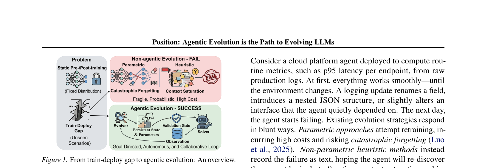
Compiled by AutoWiki — an LLM-maintained knowledge base
The field organizes into three independent dimensions: what evolves (mechanisms), where it's applied (domains), and how we understand and evaluate it (cross-cutting).
Unifying meta-principle: information gap as training signal — skills exploit skill-augmented vs. skill-free, memory exploits memory-rich vs. memory-poor, policy exploits success vs. failure.
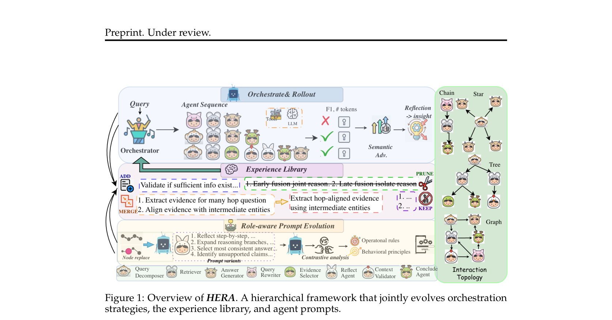
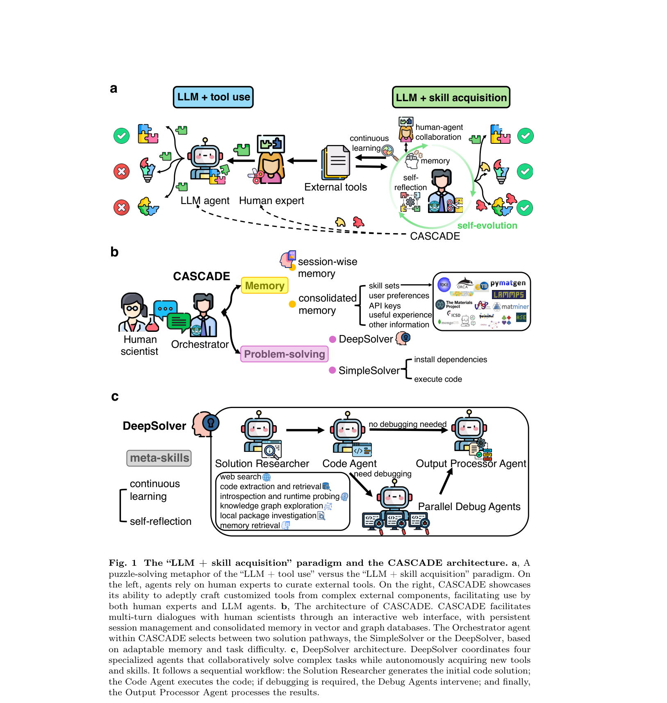
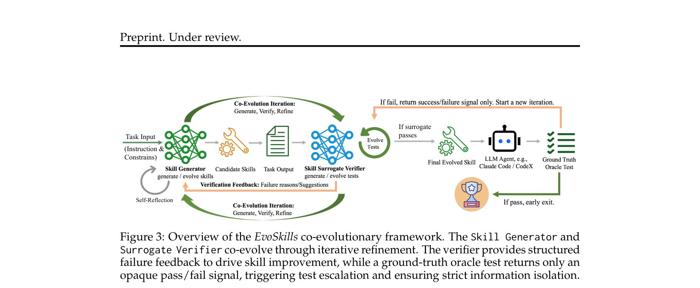
Two orthogonal dimensions: architecture evolution (meta-optimizing encode/store/retrieve/manage) and content evolution (distilling experience into actionable patterns).
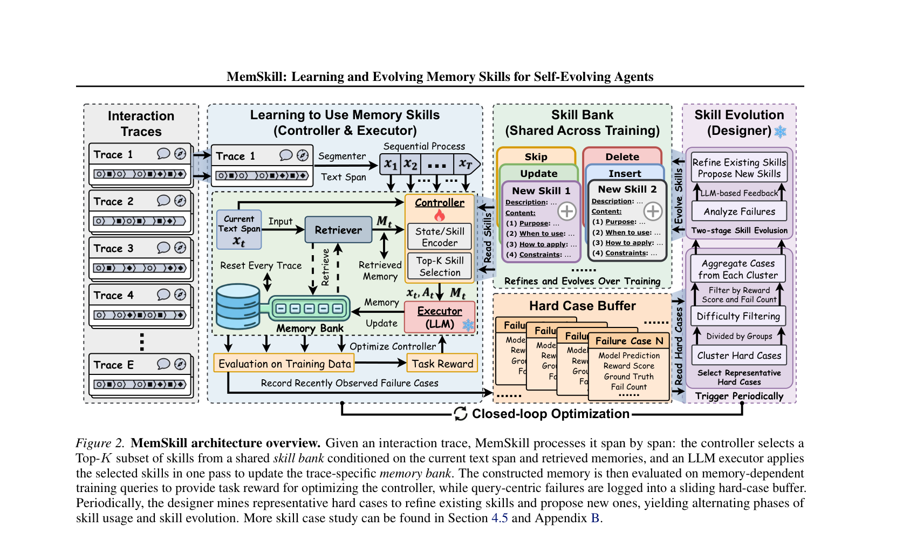
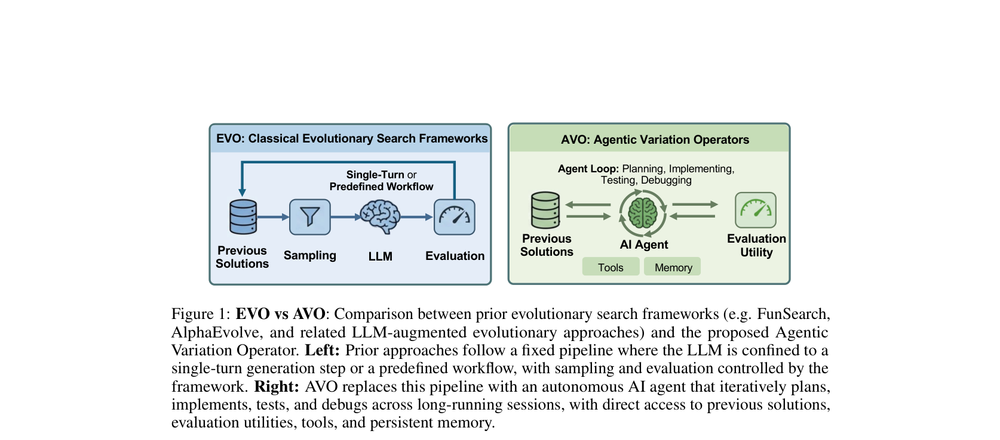
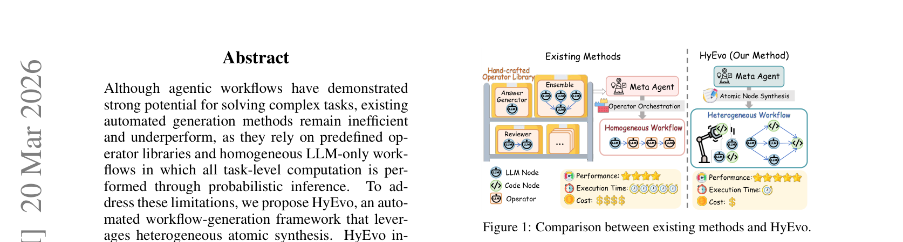
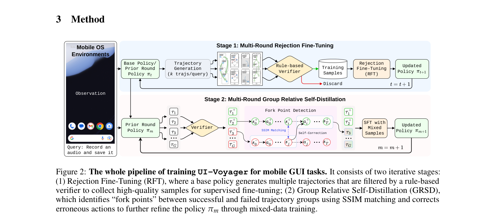
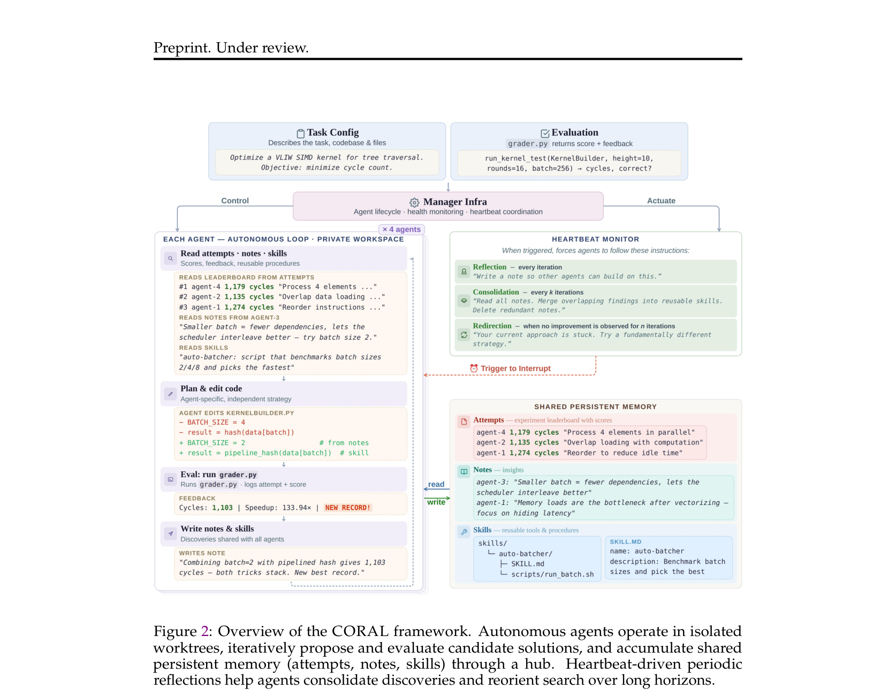
Mechanism-level principles validated under real-world constraints: physics-grounded evaluation in science, safety-constrained evolution in medicine.
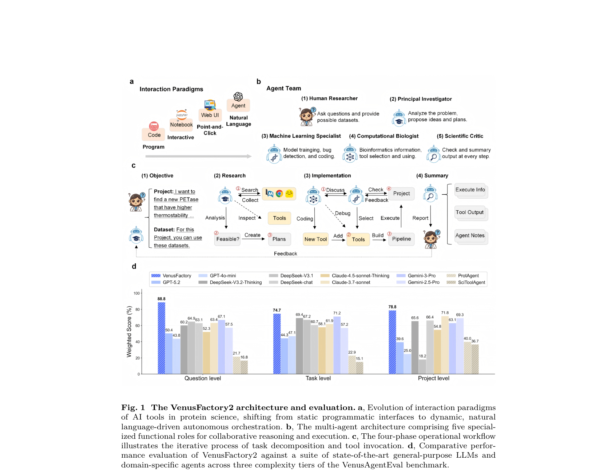
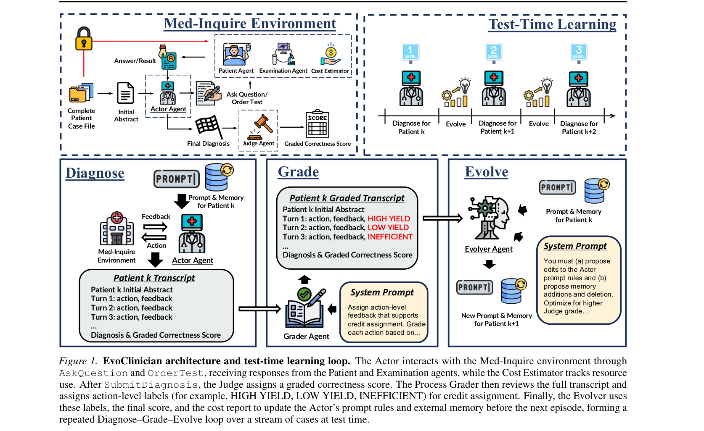
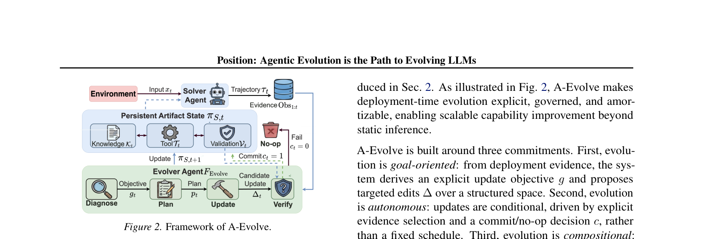
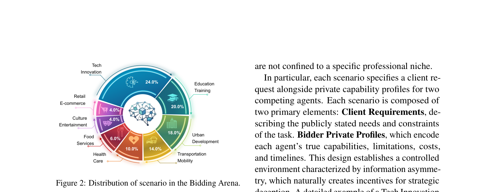
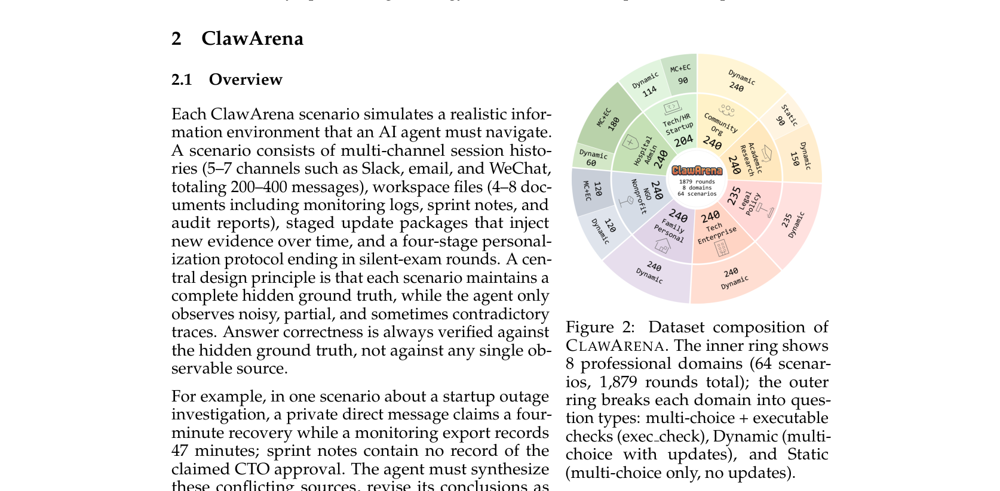
80 papers. 13 milestones. One emerging paradigm.
Evolution-time compute is a third scaling axis. The agents that evolve their own skills, memory, and policies will outpace those that don't.
Compiled by AutoWiki · AlphaLab-USTC